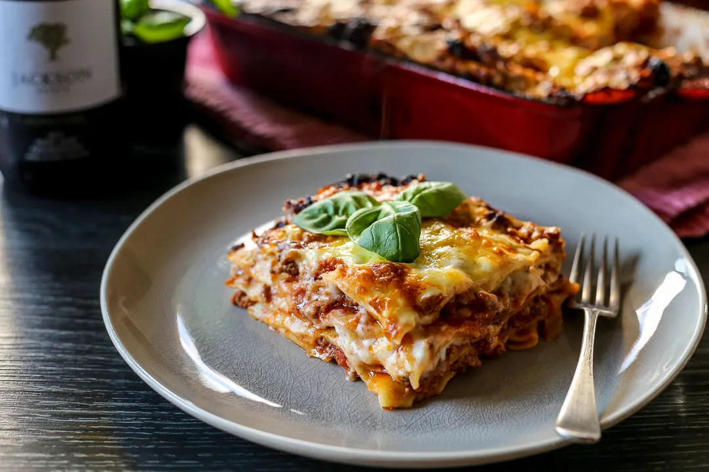

The lasagna recipe

Description
Enjoy this multi-layered italian made beauty. It's not as difficult to make as it seems. And you can learn it as fast as Now
Ingredients
- 1/2 pound ground pork
- 1/2 pound lean ground beef
- 1/2 cup minced onion
- 1 (28 ounce) can crushed tomatoes
- 1 (8 ounces) can tomato sauce
- 2 tablespoons chopped fresh parsley,
Divided
- 1 clove garlic, crushed
- 1 1/2 teaspoon dried basil
- 1 1/2 teaspoons salt
- 1/2 teaspoon dried oregano
- 1/8 teaspoon white sugar
- 1 (16 ounce) package lasagna noodles
- 1 pound small-curd cottage cheese
- 3/4 cup grated Parmesan cheese
- 3 large eggs
- 2 teaspoon salt
- 1/4 teaspoon ground black pepper
- 1 (16 ounce) package shredded mozzarella cheese
Directions
- Gather all the ingredients
- Combine pork and ground beef in a large, deep skillet over medium-high heat; cook and stir until browned and crumbly, 5 to 7 minutes.
- Add onion and cook until translucent, about 5 minutes.
- Stir in crushed tomatoes, tomato sauce, 1 tablespoon fresh parsley,garlic,basilc,salt,oregano, and sugar. Reduce heat to medium-low and simmer,stirring occasionally, for 30 minutes
- While the sauce is simmering, bring a large pot of slightly salted water to a boil. Cook lasagna noodles in the boiling water, stirring occasionallty, until tender yet firm to the bite, 8 to 10 minutes. Drain and set aside. While the noodles are cooking, preheat the oven to 375 degrees F(190 degrees C).
- Mix cottage cheese, Parmesan cheese, eggs, remaining 1 tablespoon fresh parsley, salt, and pepper in a large bowl until combined
- assemble lasagna: spread a spoon or two of sauce over the bottom of a 9x13-inch baking dish just to coat it. Place two layers of noodles over the sauce to cover.
Home